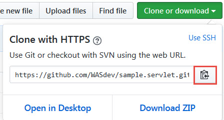
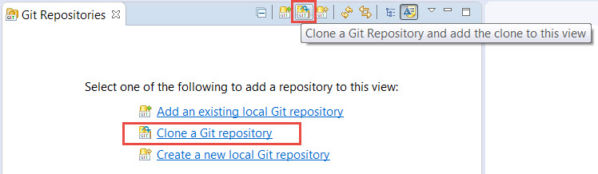
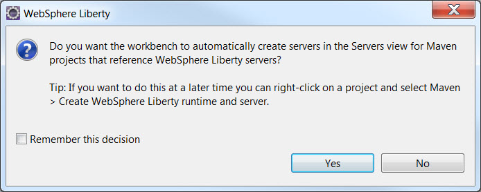

Maven builds and runs Java applications, automatically pulling in dependencies that the application needs (including, for Liberty applications, Liberty itself and any features required). If you develop your Liberty apps in Eclipse and WebSphere Developer Tools (WDT) and you are interested in using Maven to handle the building and running of your apps, you might find recent updates to WDT useful. Among other things, WDT now recognises that your Liberty app is configured to build with Maven and offers to build and re-build the server automatically for you as you make changes to your app.
Some developers prefer to use the command line, some prefer graphical IDEs. I switch between Eclipse and the command line all the time. In this article, I explain how to quickly get a simple application running using Maven in Eclipse with WDT.
Before you start
Install Eclipse with WebSphere Developer Tools (WDT) v17.0.0.2 or above (see Steps 1-2) (this version of WDT integrates well with the latest version of the Liberty Maven plugin v2.0).
Downloading a sample app from GitHub
For this article, I demonstrate how to build and run the Servlet sample, which you can find in GitHub.
To clone (copy) the Servlet sample from GitHub to your local computer:
- In your web browser, go to sample.servlet.
- Click the Clone or download button, then copy the Git repository URL:
 -
In Eclipse, open the Git Repositories view (Window > Show View > Other… > Git Repositories).
-
In the Git Repositories view, click the Clone a Git repository hyperlink:
The Git repository URL should be automatically filled in with the URL that you copied earlier.
- Click through the rest of the wizard.
{kind=link}
{kind=link}
The sample.servlet [master] repo is added to the Git Repositories view.
Building and running the sample app with Maven in Eclipse
The Servlet sample is already configured to use Maven to build and run it. All you need to do now is import the sample as a Maven project and run it using Eclipse.
Importing the sample app as a Maven project in Eclipse with WDT
- In the Git Repositories view, expand sample.servlet [master].
- Right-click the Working Tree folder, then click Copy Path to Clipboard
 Don’t select the Import Projects menu item. We’ve found that Maven projects do not get initialized properly using this option.
Don’t select the Import Projects menu item. We’ve found that Maven projects do not get initialized properly using this option. - Click File > Import…, then click Maven > Existing Maven Projects and click Next.
- In the Root Directory field, paste the repository directory that you copied, then press Enter and click Finish.
- When prompted, click Yes to let WDT create a server for this project in the Servers view:
If you click No and do not create the server during project import, you can create the server manually: Right-click the imported project, then click Maven > Create WebSphere Liberty runtime and server.
The server,
sample.servlet [sample.servlet]is displayed in the Servers view.
{kind=link}
If you accepted the offer from WDT to create the server for the project, you can see WDT automatically create the server project in the Enterprise Explorer view and the output from Maven automatically building the application in the Console view. When you save changes to the app, the Console updates to show that Maven has rebuilt the app with your changes.
Running the sample app on Liberty
To run the sample:
- In the Enterprise Explorer view, right-click the sample.servlet project, then click Run As > Run On Server.
- Confirm the selection of the server, then click Finish.
The Console view shows the URL of the application you just started. Visit the URL in a browser to view the running application.
Compiling the app without running it
You can also use Maven in WDT to compile the application without running it so that you can then deploy the WAR file to another instance of Liberty, if you prefer.
- In the Enterprise Explorer view, just right-click the sample.servlet project, then click Run As > Maven Install.
You might notice, in the Console view, that Maven starts a Liberty server. This is purely for the purpose of running the tests that are part of the Servlet sample project. Maven stops the server when the tests have run.
- If you want to delete the compiled WAR file (and other resources in the
targetdirectory and the Liberty server) completely, click Run As > Maven Clean then, when that has completed, click Run As > Maven Install again.
You can find the compiled WAR file in the target directory of the project.
Exploring how the Servlet sample is configured to use Maven in WDT
If you look at the pom.xml file in the sample.servlet project, you can see that it uses the liberty-maven-app-parent POM:
<parent>
<groupId>net.wasdev.wlp.maven.parent</groupId>
<artifactId>liberty-maven-app-parent</artifactId>
<version>2.0</version>
</parent>
The parent POM binds a common Maven lifecycle that is useful for web application development. The parent POM is inherited by the pom.xml file in the sample project. You can take a look at the effective POM (the pom.xml with the inherited POMs applied) by compiling the application (see above), opening the pom.xml in the pom.xml editor, and clicking the Effective POM tab.
In the effective POM, you can see a few instances of the <looseApplication>true</looseApplication> field which is set to true. This means that loose application support is enabled for your Maven project. This means that each time you make a change in WDT, Maven recompiles your Java files to generate new class files. This greatly speeds up the fix-compile-deploy-debug cycle.
Find out more
If you are interested in finding out more about Apache Maven for building and automation of your Liberty apps, take a look at the Liberty Maven plugin project on GitHub.
You can find out more about using Eclipse to developer applications for Liberty in the WebSphere Developer Tools for Eclipse Knowledge Center.